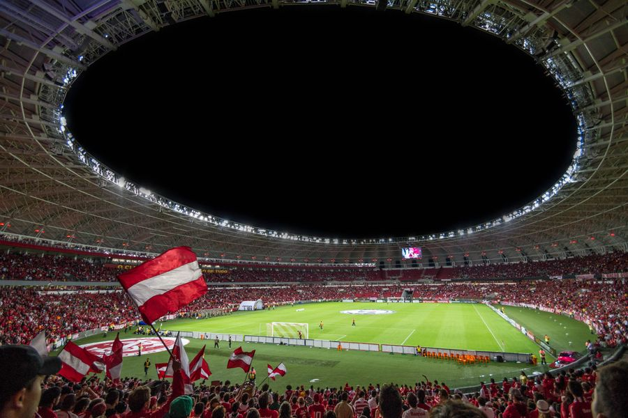

你不知道的德国 · 25
⚽ 德国足球文化
50+1规则、Stehplatz站席、Südkurve南看台、Dorfverein乡村俱乐部——足球是德国人的信仰
Vereinsfarben：穿一辈子的颜色
德国球迷对俱乐部颜色的忠诚度近乎宗教。出生在哪个城市，就支持哪个俱乐部——这不是选择，是宿命。多特蒙德是黄黑（Schwarz-Gelb）、拜仁是红白（Rot-Weiß）、不来梅是绿白（Grün-Weiß）。每个比赛日，整个城市变成俱乐部的颜色海洋。
这种"地方俱乐部认同"在德国根深蒂固。即使一个俱乐部降级到乙级甚至丙级联赛，真正的球迷也不会"转会"支持别的队。德国足球文化中有一句话："Man wechselt nicht die Farben."（不换颜色。）这和某些国家"谁强支持谁"的球迷文化截然不同。
🇩🇪 Deutsche Originalfassung / 德语原文
Die Vereinsfarben sind für deutsche Fußballfans fast eine Religion. Man wird in eine Farbe hineingeboren — ob Schwarz-Gelb (Dortmund), Rot-Weiß (Bayern) oder Grün-Weiß (Bremen). Ein echter Fan wechselt niemals die Farben, selbst wenn der Verein absteigt. "Man wechselt nicht die Farben" ist ein Grundsatz der deutschen Fankultur.
Stehplatz & Südkurve：站票与南看台
多特蒙德的Signal Iduna Park有"黄墙"（Gelbe Wand）——欧洲最大的站立看台，可容纳25000名站立的球迷。在德国，站席（Stehplatz）票价可以低至15欧，是英国球场最便宜票价的三分之一。站席文化让足球保持"工人阶级运动"的本色。
Südkurve（南看台）是每个德国球场的"心脏"——死忠球迷聚集的地方。这里有大鼓、旗帜、持续90分钟的歌声。如果你第一次去德国看球，建议别坐南看台——除非你准备好站全场、唱全场、被啤酒淋到头发。
💡 多特蒙德的"黄墙"不是黄色的墙，而是25000名穿着黄色球衣的球迷形成的视觉奇观。球场的声浪可以达到129分贝——相当于喷气式飞机起飞的噪音水平。
50+1规则：球迷掌控俱乐部
德国足球独有的"50+1"规则（50+1-Regel）是世界上最激进的俱乐部所有权制度。它规定：职业足球俱乐部的母协会（eingetragener Verein，注册协会）必须持有至少50%+1票的投票权。换句话说，俱乐部的最终控制权永远在会员（球迷）手里，而不是某个有钱的投资人。
这意味着即使一个亿万富翁买了拜仁慕尼黑75%的股份，他在俱乐部重大决策上的投票权也被限制在49%。这种制度保证了德国足球不受资本完全控制——票价保持低廉、球迷文化保持纯粹。沃尔夫斯堡和勒沃库森是少数例外（它们原本就是大众和拜耳公司的工厂队）。
Fanmeile：公共看球的狂欢
每逢世界杯或欧洲杯，德国各大城市会设立Fanmeile（球迷大道）——在标志性地点（如柏林的Brandenburger Tor前）竖起巨型屏幕，数十万球迷聚集在一起免费看球。2006年德国世界杯期间，柏林的Fanmeile吸引了超过900万人次——相当于整个德国人口的十分之一以上！
Fanmeile不仅是看球的地方，更是德国罕见的大规模情绪释放场。平时内敛的德国人在这里挥舞国旗、拥抱陌生人、集体欢呼或哭泣。这种"公众情绪"（Public Viewing）在德国社会学家看来，是战后德国重塑"健康爱国情感"的重要方式。
🇩🇪 Deutsche Originalfassung / 德语原文
Die Fanmeile ist ein Phänomen deutscher Fußballgroßereignisse. Während der WM 2006 besuchten über 9 Millionen Menschen die Berliner Fanmeile am Brandenburger Tor. Für viele Soziologen ist das Public Viewing ein Weg, wie das Nachkriegsdeutschland einen gesunden Patriotismus entwickelt hat — durch gemeinsames, friedliches Feiern.
Dorfverein：每个村子都有足球队
德国有超过25000个注册足球俱乐部（Fußballvereine），几乎每个村庄都有至少一个。Dorfverein（乡村俱乐部）不仅是踢球的地方，更是社区的中心——老人们在这里喝啤酒看比赛、主妇们周末在球场边卖自制蛋糕、孩子们从4岁开始在这里接受训练。
德国的"业余足球金字塔"极其深厚。即使是第九级别联赛的球队，也有正规的训练场、持证教练和忠实观众。这种草根足球体系（Breitensport）是德国国家队长期强盛的根基——每年有数百万孩子在本地俱乐部接受系统训练，天才从基层被层层选拔上来。
DFB-Pokal：杯赛的魔力
DFB-Pokal（德国杯）是欧洲最具魅力的杯赛之一。它的独特之处在于：任何级别的球队都有机会对阵顶级豪门。一个第七级别的业余球队如果在抽签中碰到拜仁慕尼黑，比赛就在他们的主场进行——拜仁的大牌球星要坐大巴到小村庄的球场，在几千名狂热村民面前踢球。
这种"大卫对歌利亚"的故事几乎每年都在德国杯上演。2020年，第四级别球队Rot-Weiss Essen淘汰了德甲球队勒沃库森；2023年，第三级别的Saarbrücken淘汰了拜仁慕尼黑！德国人爱这种"弱者逆袭"的故事——它证明了足球不只有金钱，还有魔力和童话。
💡 DFB-Pokal有一个有趣的规则：业余球队对阵职业球队时，业余球队自动获得主场权。这就是为什么拜仁有时要在只有5000个座位的小球场踢杯赛——大俱乐部被要求在"不合适"的场地比赛，这正是德国杯的魅力所在。
📝 核心词汇表 / Wortschatz
本集文章里的关键德语词汇，配例句加深理解
der Fußballverein, -e足球俱乐部
📌 In Deutschland gibt es über 25.000 Fußballvereine. — 德国有超过25000个足球俱乐部。
der Stehplatz, -e站席
📌 Ein Stehplatz-Ticket kostet nur 15 Euro. — 一张站票只要15欧。
die Südkurve, -n南看台
📌 In der Südkurve stehen die härtesten Fans. — 南看台站着最铁杆的球迷。
die 50+1-Regel50+1规则
📌 Die 50+1-Regel schützt die Mitsprache der Vereinsmitglieder. — 50+1规则保护俱乐部会员的话语权。
die Fanmeile, -n球迷大道
📌 Zur WM gibt es in jeder Stadt eine Fanmeile. — 世界杯期间每个城市都有球迷大道。
der Dorfverein, -e乡村俱乐部
📌 Der Dorfverein ist das Herz des Dorfes. — 乡村俱乐部是村庄的心脏。
der DFB-Pokal德国杯
📌 Im DFB-Pokal kann ein Amateurverein gegen Bayern München spielen. — 在德国杯中，业余队可以踢拜仁。
die Vereinsfarben (Pl.)俱乐部颜色
📌 Die Vereinsfarben von Dortmund sind Schwarz und Gelb. — 多特蒙德的俱乐部颜色是黑黄。
der Fan, -s球迷
📌 Die Fans singen 90 Minuten lang. — 球迷唱了90分钟。
Leons Deutschzentrum
📖 想读更多德国冷知识？
51 期「你不知道的德国」深度专栏，都在 Leon 德语学习中心。
📚 进入网站